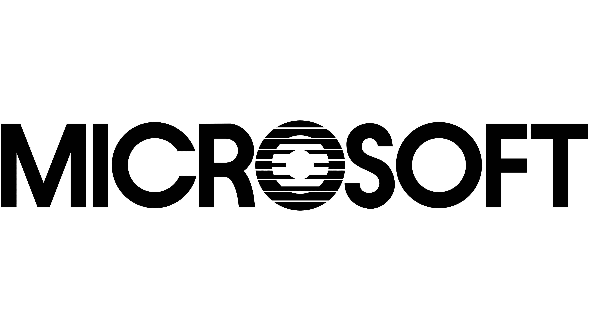

Programação Web I
|
Microsoft - Abrindo Janelas |
Desenvolvimento de Sistemas Programação Web I |
||
| Home | Windows | Atualidade | Cadastro | Créditos |
| A Microsoft é uma empresa de tecnologia fundada por Bill Gates e Paul Allen, em 1975, nos Estados Unidos, por suas paixões em comum por computadores. Neste ano, eles receberam um projeto do MITS para escrever uma linguagem de programação, que ganhou o nome de Altair BASIC. O acordo com a Altair os motivou a iniciar sua própria empresa – a Microsoft no Novo México com Gates como seu primeiro CEO. |  | |||
|
Com sede em Redmond (Washington), a companhia atua no suporte e desenvolvimento de softwares,
dispositivos e serviços relacionados à computação pessoal, produtividade e soluções em nuvem.
Além disso, a marca também tem expressiva participação nos segmentos de inteligência artificial,
realidade virtual e games. Alguns feitos marcam o início da sua trajetória: o primeiro produto desenvolvido pela empresa foi uma versão do interpretador BASIC, para o computador Altair 8800 da MITS. Em 1976 foi lançado o Microsoft FORTRAN, para computadores baseados em CP/M. Vale ressaltar que a companhia entrou no ramo de sistemas operacionais em 1980, com sua própria versão do Unix, chamada Xenix. Entretanto, em 1985 uma nova página foi escrita na história, quando a Microsoft lançou o Windows. |
||||
| Diversos documentários apresentam a história da empresa que mudou a navegação na computação pessoal, com os primeiros passos da Microsoft, Apple (sua grande concorrente histórica) e outras empresas fundamentais para a evolução tecnológica. O Piratas do Vale do Silício, do diretor Martyn Burke apresenta, em tom de ficção, trata a história de surgimento da Apple e da Microsoft. | ||||
|
||||